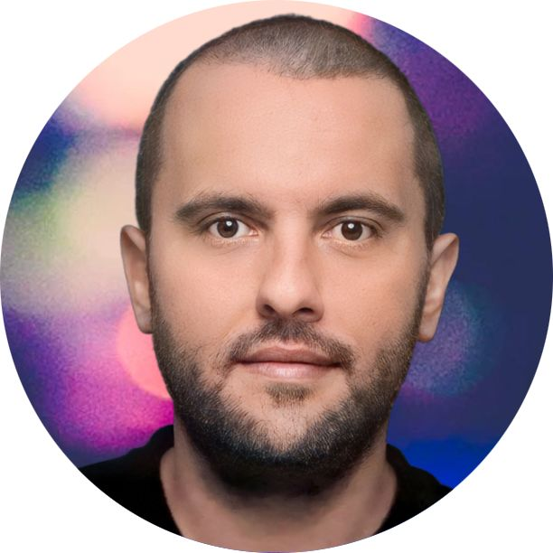

SANKODE Intelligence
RadMap Ekibi
Takım Üyeleri
Üç 10. sınıf öğrencisinden oluşan ekibimiz, teknoloji ve çevre sağlığına olan ortak ilgisiyle RadMap projesini geliştirdi.
Takım Üyesi 1
10. sınıf öğrencisi
Proje sürecinde donanım kurulumu, yazılım geliştirme ve sunum hazırlığında aktif rol aldı.
Takım Üyesi 2
10. sınıf öğrencisi
Proje sürecinde donanım kurulumu, yazılım geliştirme ve sunum hazırlığında aktif rol aldı.
Takım Üyesi 3
10. sınıf öğrencisi
Proje sürecinde donanım kurulumu, yazılım geliştirme ve sunum hazırlığında aktif rol aldı.

Danışman Öğretmen
Oğuzhan Bilir
Danışman öğretmen
RadMap projesinde donanım entegrasyonu, yazılım mimarisi ve sunum stratejisi konularında ekibe rehberlik eden danışman öğretmenimiz; öğrencilerin proje tabanlı öğrenme süreçlerinde teknik bilgi birikimini paylaşarak projenin başarıya ulaşmasına katkı sağlamıştır.
Yarışma Dereceleri
- Codeavour 7.0 · Türkiye 3.lüğü (Şubat 2026, SANKODE Intelligence takımı)
- Samsung Solve for Tomorrow 2026 · Türkiye finalisti (GeigerTim takımı, final 30 Kasım 2026)
- TÜBİTAK 2204-A · Adana bölge sergisine davet